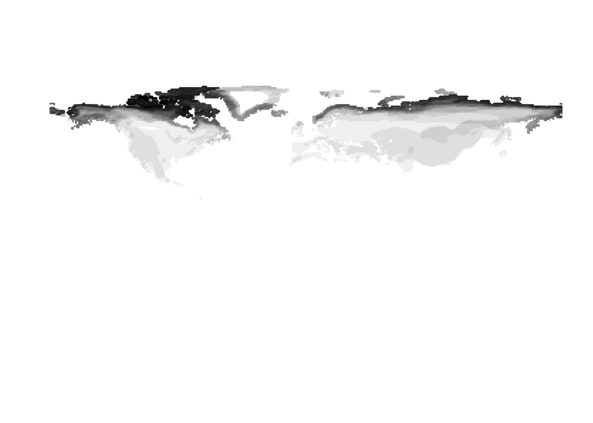
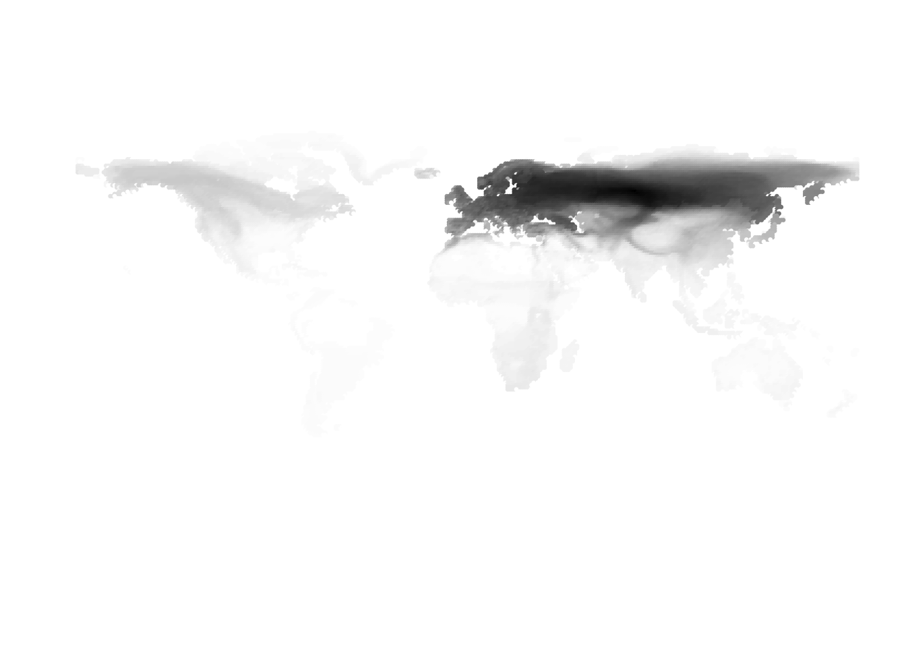

Creating assemblage fields from cells by birds presence absences
Kushal K Dey
12/17/2017
library(ggplot2)
library(ggthemes)
library(maps)Constructed Assemblage
new_assemblage <- get(load("../output/constructed_assemblage.rda"))Original Assemblage
old_assemblage <- readRDS("../data/global_disp_field_matrix_breeding_birds_rds.rds")Assemblage Map Function
We load the latitude and longitude data for each site for the newly constructed assemblage as well as the older assemblage.
latlong <- get(load("../data/LatLongCells_frame.rda"))We write the plotting function.
world_map <- map_data("world")
world_map <- world_map[world_map$region != "Antarctica",] # intercourse antarctica
p <- ggplot() + coord_fixed() +
xlab("") + ylab("")
#Add map to base plot
base_world_messy <- p + geom_map(data=world_map, map = world_map, aes(group=group, map_id=region), colour="white", fill="white", size=0.05, alpha=1/4)
cleanup <-
theme(panel.grid.major = element_blank(), panel.grid.minor = element_blank(),
panel.background = element_rect(fill = 'white', colour = 'white'),
axis.line = element_line(colour = "white"), legend.position="none",
axis.ticks=element_blank(), axis.text.x=element_blank(),
axis.text.y=element_blank())
base_world <- base_world_messy + cleanupPlotAssemblageIdx <- function(idx){
dat <- cbind.data.frame(latlong, new_assemblage[,idx])
colnames(dat) <- c("Latitude", "Longitude", "Value")
map_data_coloured <-
base_world +
geom_point(data=dat,
aes(x=Latitude, y=Longitude, colour=Value), size=0.5) +
scale_colour_gradient(low = "white", high = "black")
map_data_coloured
}Example Plots of sites
par(mfrow = c(10, 2))
PlotAssemblageIdx(500)
PlotAssemblageIdx(1000)PlotAssemblageIdx(1500)PlotAssemblageIdx(2000)PlotAssemblageIdx(3000)PlotAssemblageIdx(4000)PlotAssemblageIdx(5000)
PlotAssemblageIdx(7000)
PlotAssemblageIdx(8000)PlotAssemblageIdx(9000)PlotAssemblageIdx(10000)PlotAssemblageIdx(11000)
PlotAssemblageIdx(12000)PlotAssemblageIdx(13000)PlotAssemblageIdx(14000)PlotAssemblageIdx(15000)PlotAssemblageIdx(15500)PlotAssemblageIdx(16000)PlotAssemblageIdx(16500)PlotAssemblageIdx(17000)This R Markdown site was created with workflowr